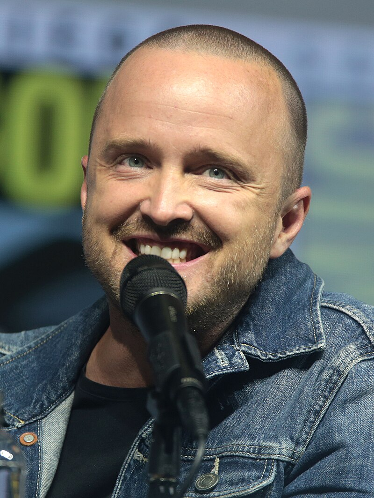
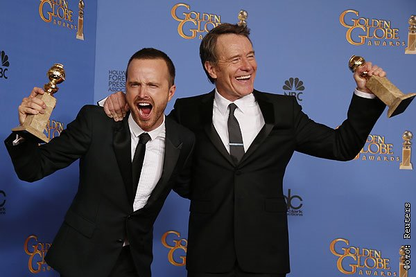

Аарон Пол
Дата рождения: 27 августа 1979
Полных лет: 45
Количество фильмов: 51
Жанры фильмов: Драма, триллер, комедия

Лучшие фильмы

Некоторая информация
Эмми
Аарон Пол получил свою первую премию «Эмми» 29 августа 2010 года за роль Джесси Пинкмана в сериале «Во все тяжкие» в категории «Лучшая мужская роль второго плана в драматическом сериале». Позднее он удостоился этой премии ещё дважды — 23 сентября 2012 года и 22 сентября 2014 года — став первым актёром, получившим три награды «Эмми» в данной категории за одну и ту же роль.

Начало карьеры
Аарон Пол начал карьеру с небольших ролей и рекламных съемок, переехав в Лос-Анджелес из Айдахо с большими амбициями и почти без денег. Он пробовался на всё подряд, появляясь в эпизодах сериалов, таких как «Скорая помощь» и «C.S.I.: Место преступления», набираясь опыта. Настоящим прорывом для него стала роль Джесси Пинкмана в сериале «Во все тяжкие», куда его утвердили благодаря сильным пробам. Изначально его персонаж должен был исчезнуть после первого сезона, но игра Аарона так впечатлила создателя шоу Винса Гиллигана, что Джесси остался, а роль принесла актеру три премии «Эмми» и международную известность.Личная жизнь
Аарон Пол женат на Лорен Парсекян, режиссере и активистке, с которой он познакомился на музыкальном фестивале Coachella в 2010 году. В 2013 году пара сыграла свадьбу в Париже в присутствии семьи и друзей. Лорен и Аарон известны своей крепкой, теплой связью и часто делятся трогательными моментами совместной жизни в социальных сетях. В 2018 году у них родилась дочь Стори Аннабель Пол. Аарон активно поддерживает благотворительные инициативы Лорен, особенно кампанию Kind Campaign, направленную на борьбу с буллингом среди девочек.Политическая карьера
В мае 2021 года стало известно о намерении актёра баллотироваться на пост губернатора Техаса. В июне 2022 года Макконахи присоединился к брифингу для прессы в Белом доме и выступил с двадцатиминутной речью за «здравые законы об оружии». После рассказа о стрельбе в начальной школе «Робб» он отметил: «Нам нужно ответственное владение оружием. Нам нужны проверки биографических данных. Нам нужно поднять минимальный возраст для покупки винтовки AR-15 до 21 года».Фильмография
| Год | Русское название | Оригинальное название | Роль |
|---|---|---|---|
| 1999 | Беверли-Хиллз, 90210 | Beverly Hills 90210 | Чед |
| 2001 | 100 подвигов Эдди Макдауда | 100 Deeds for Eddie McDowd | Итан |
| 2001 | Планета Ка-Пэкс | K-PAX | Майкл Пауэлл |
| 2012 | В хлам | Smashed | Чарли Ханна |
| 2014 | Need for Speed: Жажда скорости | Need for Speed | Тоби Маршалл |
| 2015 | Отцы и дочери | Fathers and Daughters | Кэмерон |
| 2016 | Три девятки | Triple 9 | Гейб Уэлч |
| 2016 | Девятая жизнь Луи Дракса | The 9th Life of Louis Drax | Питер |
| 2014 | Настоящий детектив | True Detective | Раст Коул |
| 2017 | Чёрное зеркало | Black Mirror | Gamer691 (голос) |
| 2019 | Путь: Во все тяжкие. Фильм | El Camino: A Breaking Bad Movie | Джесси Пинкман |
| 2022 | Лучше звоните Солу | Better Call Saul | Джесси Пинкман |